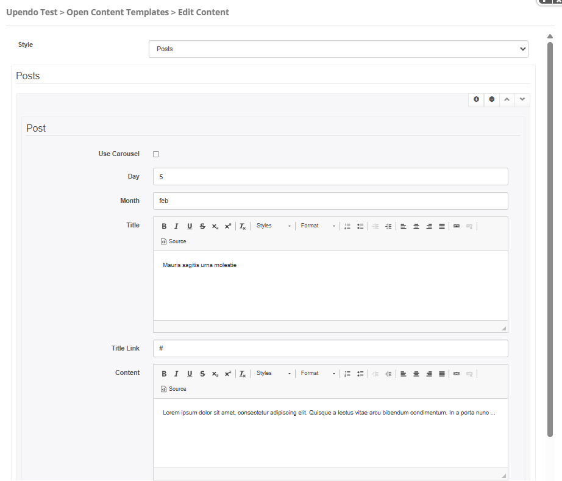
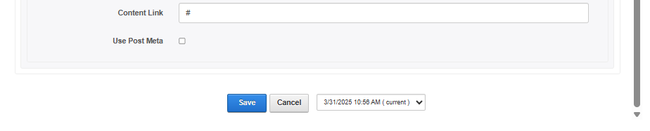
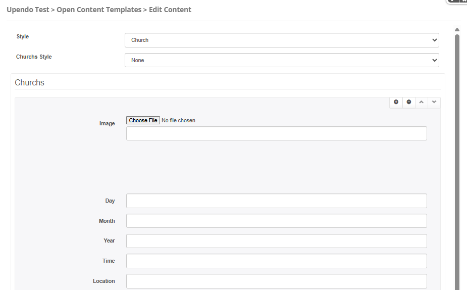
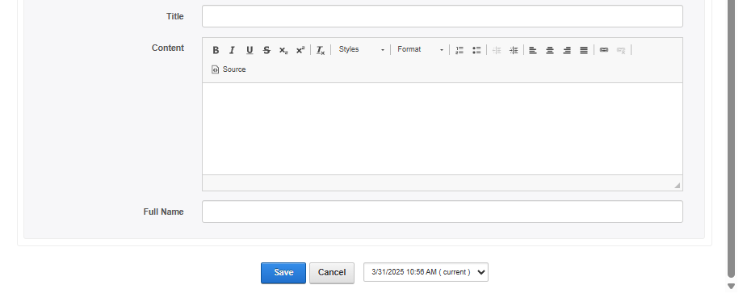
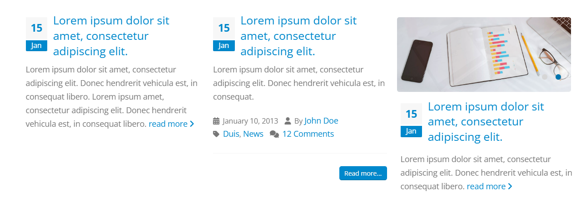
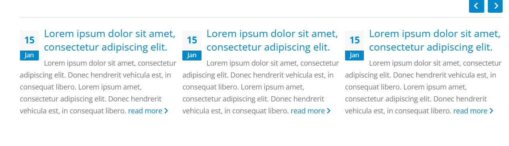
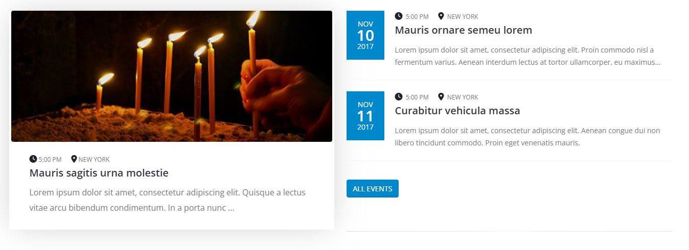
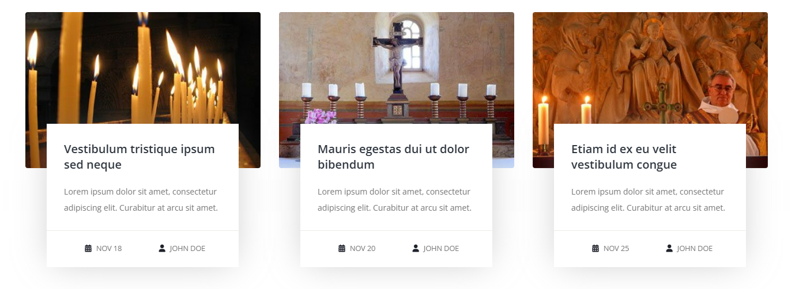

Porto-Posts Documentation
Overview
The Porto-Posts component allows you to create visually appealing posts and church event layouts with customizable styles, carousels, and metadata. It supports various configurations to match your design needs.
For more details, check out the Porto-Posts repository on GitHub or the Porto documentation.
Usage Example
Edit
Posts Style
 Church Style
 Properties
| Style | Configuration | Description |
|---|---|---|
Style Defines the style of the layout. Options:
|
||
| Posts | Use Carousel | Specifies whether to enable a carousel for the post's images. |
| Images | A list of images for the post. Example: https://example.com/image1.jpg. |
|
| Day | The day of the post. Example: 5. |
|
| Month | The month of the post. Example: February. |
|
| Title | The title of the post. Example: My First Post. |
|
| Title Link | The URL for the post's title link. Example: #. |
|
| Content | The content of the post. Example: This is the content of the post.. |
|
| Content Link | The URL for the post's content link. Example: #. |
|
| Use Post Meta | Specifies whether to include metadata for the post. Example: true or false.
|
|
| Church | Churchs Style | Defines the style of the church events layout. Options: inverted, info,
blog. |
| GridWidth | Defines the width of the grid for church events (requires Churchs Style to be
info). Options: col-md-1 to col-md-12. |
|
| Churchs | A list of church events. Each event includes:
|
|
Views
Below are examples of the different styles and configurations available for the Porto-Image-Gallery component. Each style is customizable and can be adapted to your design needs.
Posts
Posts carousel
Churchs
Churchs

Note:
- The Style property must be set to either
PostsorChurchto determine the layout and available configurations. - When Style is set to
Posts, you can enable the Use Carousel option to display images in a carousel format. - If Use Post Meta is enabled, additional metadata such as Date, Full Name, and News Link can be configured for each post.
- When Style is set to
Church, the Churchs Style property determines the layout (e.g.,inverted,info, orblog). - If Churchs Style is set to
info, the GridWidth property can be used to define the width of the grid (e.g.,col-md-6for half-width). - Ensure that all required fields, such as Day, Month, and Title, are filled out for both posts and church events.